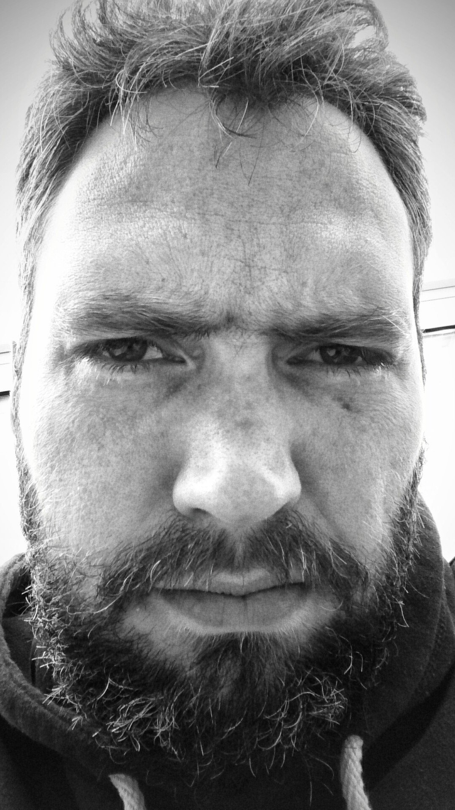

|  |
Jonathan MartiatFounder of KanbanR and Organizational Performance Coach. I am supporting teams and organizations to (re)design their structure and ways of working in order to help them to build better products or services. I am a coffee lover and a computer game geek (even if I don't play that much anymore). My favourites are LoL, BFv, CS, Vermintide 2 :). I love reading books on businesses, organizational structure, design and strategy or listening to them while I am driving. On average, I am reading 2 books a month. I describe myself as an energetic, result-driven, and accomplished agile/lean professional with 14+ years of experience leading/advising digital transformations and efficiency improvement programs across multiple sectors (Banking, Telecom, Life Sciences, ...) and regions (mainly EU and APAC).
|
| 01/2018 - Present | | ING Belgium (Belgium) | | Agile Coach |
| 01/2017 - Present | | KanbanR (Belgium) | | Founder and Responsible for Operations |
| 03/2018 - 11/2018 | | Muebox (United Kingdom) | | Chief Technology Officer |
| 03/2017 - 12/2017 | | BNP Paribas Fortis (Belgium) | | Agile Coach |
| 05/2015 - 08/2015 | | Telstra (Australia) | | Lean Startup Lead |
| 11/2014 - 04/2015 | | Telstra (Australia) | | Release Train Engineer |
| 11/2011 - 10/2014 | | Capgemini (Australia) | | Manager |
| 06/2011 - 10/2011 | | Tata Consulting (Belgium) | | SharePoint Practice Lead |
| 04/2008 - 05/2011 | | Vision It Group - OnePoint (Belgium) | | SharePoint Solution Lead |
| 06/2005 - 03/2008 | | Polaris (Belgium) | | System Engineer |